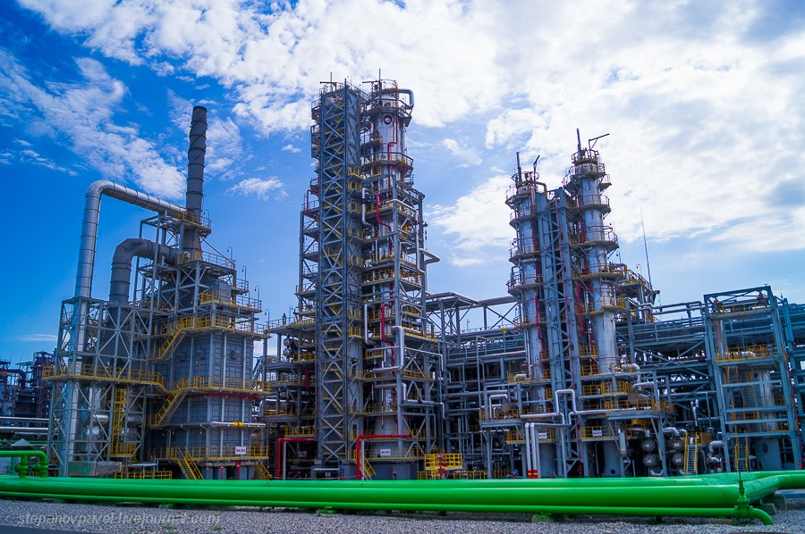
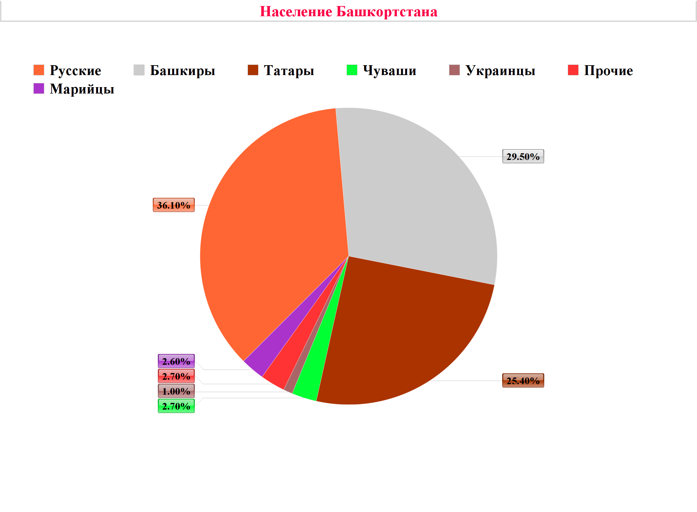

Переход от социализма к капитализму внёс свои коррективы в развитие республики. Например, преследуемые Советской властью, религии с распадом СССР вновь вернулись в РБ (как и во всю Россию), а вот нефтянную промышленность Башкортстан активно развивает ещё с советских времён. Давайте рассмотрим отрасли, которые имеют непосредственное влияние в современной Башкирии.
Промышленность. Основной отраслью промышленности края является добыча и переработка нефти. В начале 30-х годов Советы решили продвигать добычу полезных ископаемых в крае, и уже 16 мая 1932 года в Ишимбае был добыт первый литр чёрного золота. По сравнению с 1970 годами (рекордные 45 миллионов тон!) добыча нефти понизилась и достигла всего 11 миллионов тон, таким образом, РБ занял 7 место (1970 году БАССР была на втором) среди регионов России. Несмотря на это, нефтепереработка в Башкортстане является одной из крупнейшей в Федерации, а также в Европе.
Кроме того, Башкортстан представлен весьма развитой отраслью машиностроения. Например, в Уфе производят авиационные двигатели и троллейбусы, в Нефтекамске автобусы, в Ишимбае Вездеходы, а вертолёты строятся в Кумертау. Меньшее распрастранение в республике получили деревообработывающие и металлообрабатывающие отрасли промышленности.
Наука и образование. С приходом Советской власти началось внедрение образования в Башкирию: колличество школ увеличивалось, а число неграмотных сократилось до нуля. Также большим шагом в развитии науки стало открытие Академии наук БАССР в 1991 году. В научных достижениях генетики и биологии в целом известны имена: Нажип Валитов (Взаимодействие химических веществ, органическая химия) М. С. Юнусова (Органическая химия), Г. А. Толстикова (биологический катализ и синтез); в математике и физике: А. Ф. Леонтьева (теория о функции комплекстной переменной), Р. И. Нигматуллина; башкирский этнос и история: Р. З. Янгузин, С. Ф. Касимов.
Интересное открытие сделал башкирский учёный в области химии Нажип Валитов. Он пишет:«Прежде считалось, что никакое взаимодействие не может совершаться со скоростью, превышающей скорость света, - рассказывает о своем открытии профессор валитов. - Это триста тысяч километров в секунду. Но оказалось, что электромагнитные и гравитационные поля взаимодействуют мгновенно. Я обосновал это теоретически и подтвердил экспериментально. А потом поразился - ведь это говорит о существовании во вселенной какой-то единой высшей силы! Ведь, по сути, все связано со всем».
Папа Римский написал Нажипу Хатмулловичу из Ватикана! Можно сказать, что открытие учёного доказало существование самого Бога. Усомнившись в выводах, коллеги подсчитали: теория профессора валитова опровергает 12 законов термодинамики, 20 разделов химии, 28 разделов физики, 40 разделов механики. Валитов вновь свои расчеты проверил. И не нашел ошибок. Потом предложил проверить свои выводы научным оппонентам. И они не смогли их опровергнуть.
Вскоре вновьпришло письмо от Папы, в нём говорилось:«Дорогой профессор! Его преосвященство папа Иоанн Павел второй уверяет вас, что он посвящает вам свои молитвы, - пишет автору монографии нажипу Хатмулловичу валитову один из помощников и экспертов папы римского. - Он желает также, чтобы вы знали, что первосвященник ценит чувства, побудившие вас написать эту монографию. Только после тщательного исследования и солидной экспертизы мы решили прислать вам нашу благодарность».
Население. По данным на 2019 год число населения Башкортстана 4,05 миллионов человек, благодаря чему край занимает первое место по колличеству жителей среди республик России. Плотность населения 28,3 человека на квадратный километр, из него 60% проживает в городе (половина (30%) в Уфе).
Национальный состав Башкортостана согласно Всероссийской переписи населения 2010 года: русские — 36,1%, башкиры — 29,5%, татары — 25,4%, чуваши — 2,7%, марийцы — 2,6%, украинцы — 1%, лица других национальностей — 2,7%. Всего в республике проживают представители 160 национальностей.
Перспективы развития. В настоящее время вся инфраструктура и экономика Башкирии держится на нефтепереработке. Безусловно, республика закрепилась на российском рынке, благодаря своей качественной обработке чёрного золота. Но, к сожалению, свои собственные месторождения истощены, а необходимое плезное ископаемое завозится из других регионов РФ. С одной стороны нефть стабильно поддерживает экономику края, но с другой стабильно ли? Башкортстан должен развивать другие отрасли промышленности, которые доступны на данной территории. Иначе, при нехватке нефти, начнётся кризис башкирской экономики.